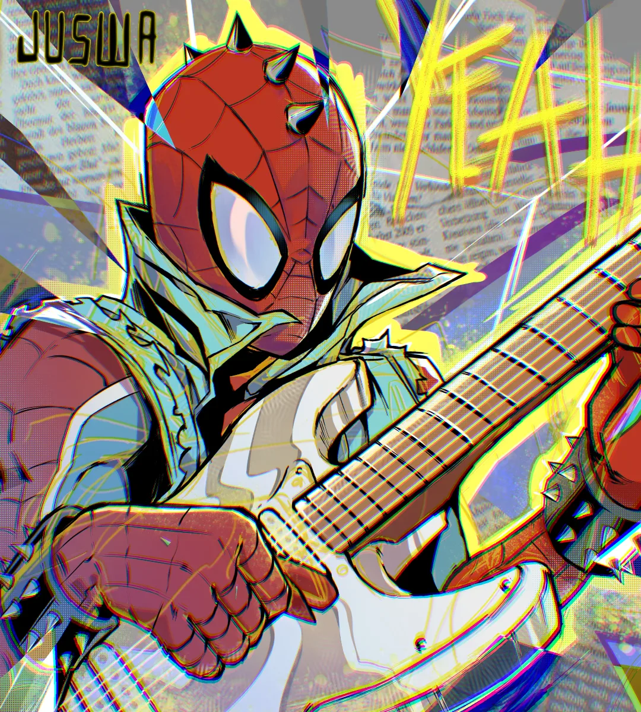
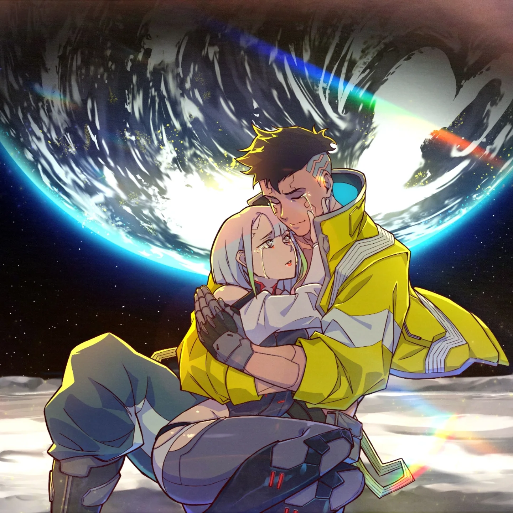
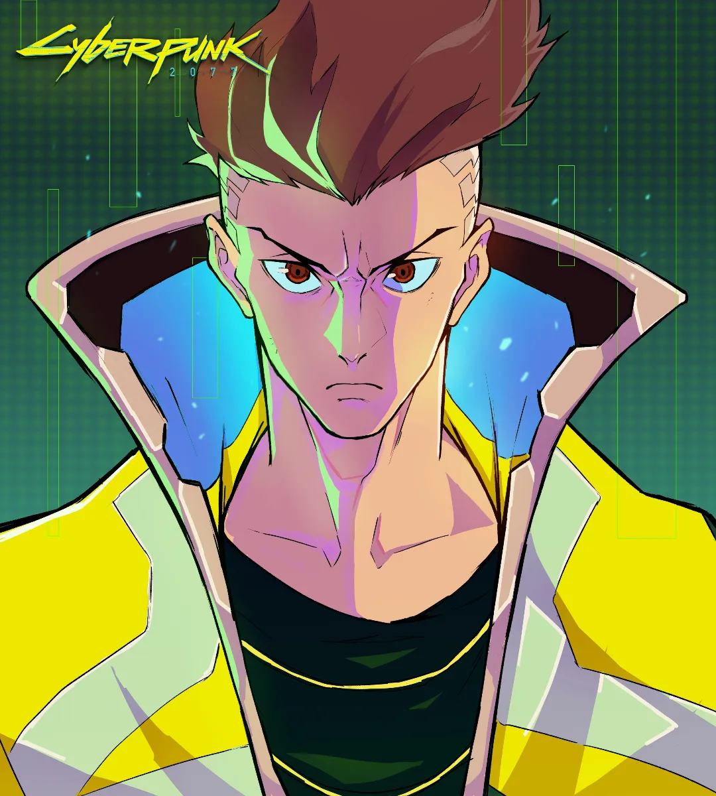
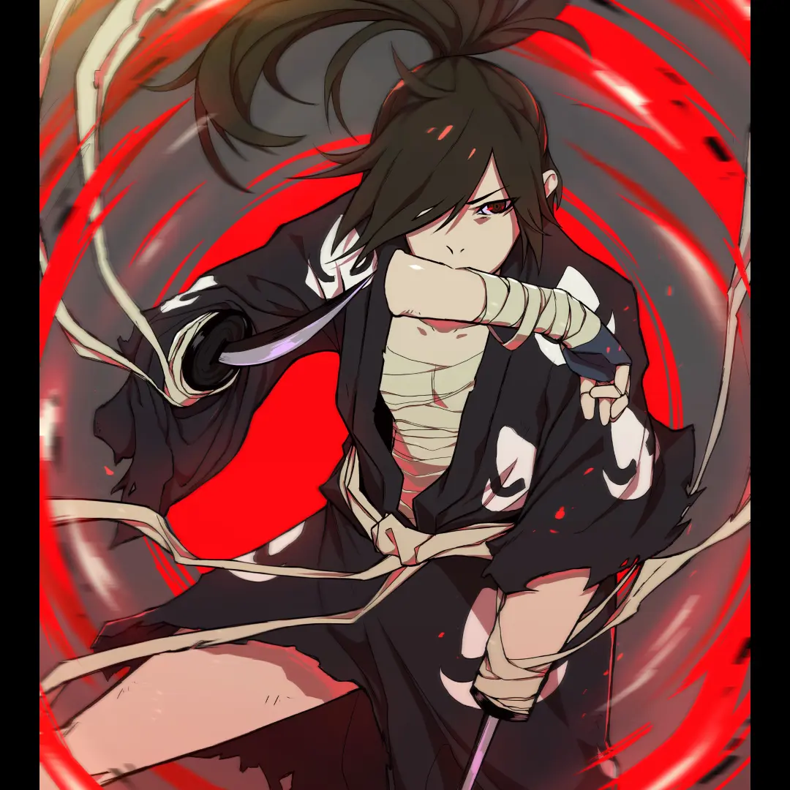
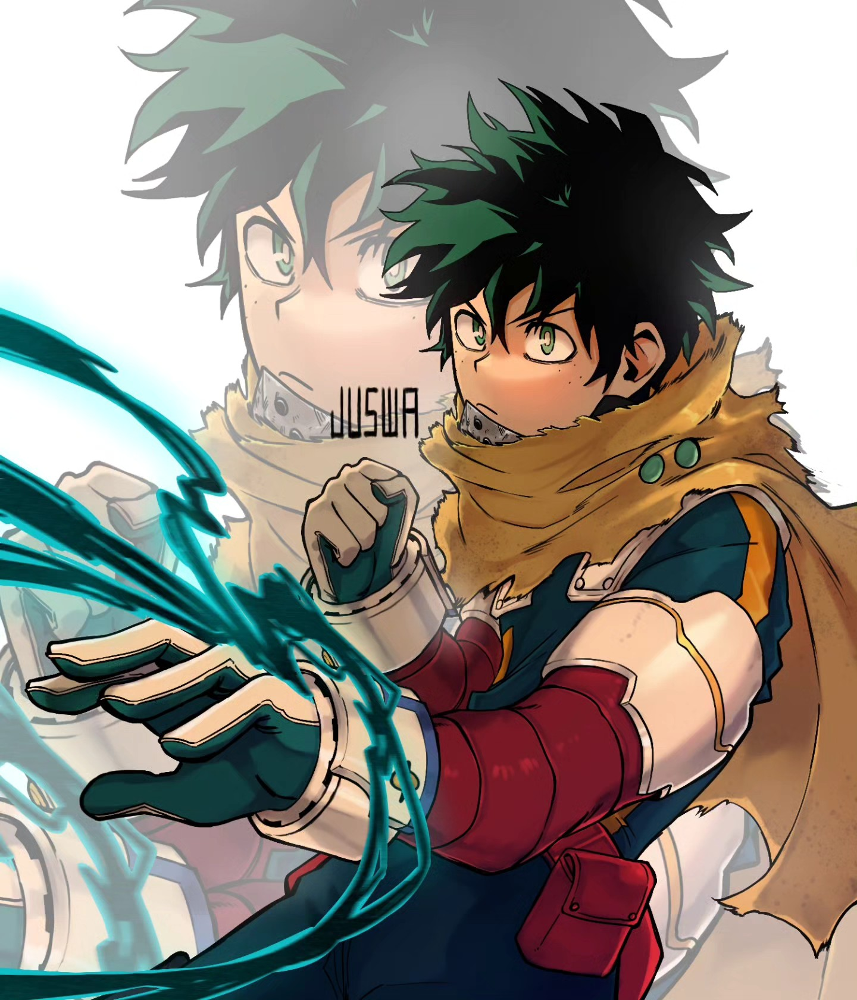

05 / CREATIVE GALLERY
The digital sketchbook.
A focused collection of digital character illustrations, anime studies, and lighting experiments painted using digital styluses in Krita. Click any piece to inspect in high resolution.




05.1 / PROCESS & TOOLS
The creative process.
Digital drawing is where discipline meets intuition.
Every piece begins with gesture sketching and structural anatomy before moving to ink line passes. In Krita, custom brush presets allow blending of cel-shaded highlights with soft color gradients and halftone screen textures.
Studying character form and lighting under extreme conditions directly informs my frontend user experience thinking — understanding where the eye travels and how contrast guides focus.